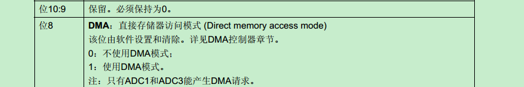

By
weyne
Updated:
Contents
之所以要记录下来，是因为这个里面有一个坑。和其他外设(USART,DCMI)DMA不同的是，需要多设置一步
ADC_DMARequestAfterLastTransferCmd(ADC2,ENABLE);，这一个不开启的话，ADC只会转换一次的值，不会连续采集。对应的是ADC CR2 的DDS位。

这一个位在STM32F1里面是没有的

1
2
3
4
5
6
7
8
9
10
11
12
13
14
15
16
17
18
19
20
21
22
23
24
25
26
27
28
29
30
31
32
33
34
35
36
37
38
39
40
41
42
43
44
45
46
47
48
49
50
51
52
53
54
55
56
57
58
59
60
61
62
63
64
65
66
67
68
69
70
71
72
73
74
75
76
| GPIO_InitTypeDef GPIO_InitStructure;
ADC_CommonInitTypeDef ADC_CommonInitStructure;
ADC_InitTypeDef ADC_InitStructure;
DMA_InitTypeDef DMA_InitStructure;
RCC_AHB1PeriphClockCmd(RCC_AHB1Periph_GPIOA | RCC_AHB1Periph_DMA2, ENABLE);
RCC_APB2PeriphClockCmd(RCC_APB2Periph_ADC2, ENABLE);
GPIO_InitStructure.GPIO_Pin = GPIO_Pin_5;
GPIO_InitStructure.GPIO_Mode = GPIO_Mode_AN;
GPIO_InitStructure.GPIO_PuPd = GPIO_PuPd_NOPULL ;
GPIO_Init(GPIOA, &GPIO_InitStructure);
RCC_APB2PeriphResetCmd(RCC_APB2Periph_ADC2,ENABLE);
RCC_APB2PeriphResetCmd(RCC_APB2Periph_ADC2,DISABLE);
ADC_CommonInitStructure.ADC_Mode = ADC_Mode_Independent;
ADC_CommonInitStructure.ADC_TwoSamplingDelay = ADC_TwoSamplingDelay_5Cycles;
ADC_CommonInitStructure.ADC_DMAAccessMode = ADC_DMAAccessMode_1;
ADC_CommonInitStructure.ADC_Prescaler = ADC_Prescaler_Div4;
ADC_CommonInit(&ADC_CommonInitStructure);
ADC_InitStructure.ADC_Resolution = ADC_Resolution_12b;
ADC_InitStructure.ADC_ScanConvMode = ENABLE;
ADC_InitStructure.ADC_ContinuousConvMode = ENABLE;
ADC_InitStructure.ADC_ExternalTrigConvEdge = ADC_ExternalTrigConvEdge_None;
ADC_InitStructure.ADC_DataAlign = ADC_DataAlign_Right;
ADC_InitStructure.ADC_NbrOfConversion = 1;
ADC_Init(ADC2, &ADC_InitStructure);
ADC_RegularChannelConfig(ADC2 , ADC_Channel_5 , 1, ADC_SampleTime_480Cycles );
DMA_DeInit(DMA2_Stream3);
DMA_InitStructure.DMA_Channel = DMA_Channel_1;
DMA_InitStructure.DMA_PeripheralBaseAddr = (uint32_t)(&ADC2->DR);
DMA_InitStructure.DMA_Memory0BaseAddr = (uint32_t)&temperature;
DMA_InitStructure.DMA_DIR = DMA_DIR_PeripheralToMemory;
DMA_InitStructure.DMA_BufferSize = 1;
DMA_InitStructure.DMA_PeripheralInc = DMA_PeripheralInc_Disable;
DMA_InitStructure.DMA_MemoryInc = DMA_MemoryInc_Disable;
DMA_InitStructure.DMA_PeripheralDataSize = DMA_PeripheralDataSize_HalfWord;
DMA_InitStructure.DMA_MemoryDataSize = DMA_PeripheralDataSize_HalfWord;
DMA_InitStructure.DMA_Mode = DMA_Mode_Circular;
DMA_InitStructure.DMA_Priority = DMA_Priority_Low;
DMA_InitStructure.DMA_FIFOMode = DMA_FIFOMode_Disable;
DMA_InitStructure.DMA_FIFOThreshold = DMA_FIFOThreshold_Full;
DMA_InitStructure.DMA_MemoryBurst = DMA_MemoryBurst_Single;
DMA_InitStructure.DMA_PeripheralBurst = DMA_PeripheralBurst_Single;
DMA_Init(DMA2_Stream3, &DMA_InitStructure);
ADC_EOCOnEachRegularChannelCmd(ADC2,DISABLE);
ADC_DMARequestAfterLastTransferCmd(ADC2,ENABLE);
ADC_DMACmd(ADC2,ENABLE);
DMA_Cmd(DMA2_Stream3,ENABLE);
ADC_Cmd(ADC2, ENABLE);
ADC_SoftwareStartConv(ADC2);
|